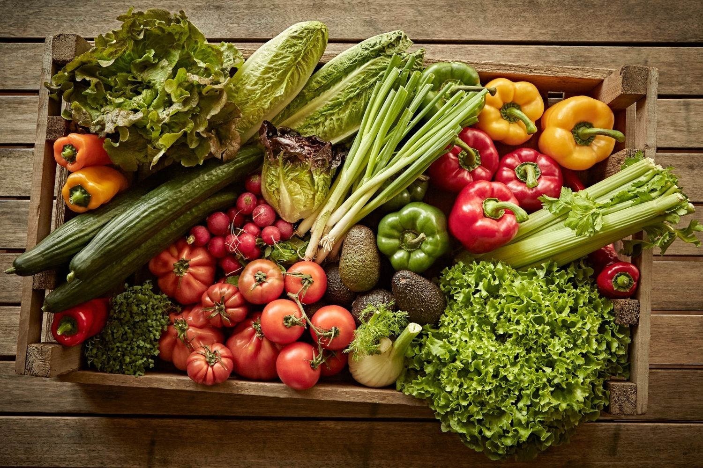

BLOG - ORGANIC VS NON ORGANIC FOOD FACTS
24 February 2023
The term ‘organic’ refers to the way the food is produced. Organic means lesser or no use of chemicals, no preservatives, no artificial flavour or fertilizers, etc. In order for food to be labelled as organic, they must be free of chemicals and additives
No pesticides or added chemicals
This is one of the biggest reasons why organic is better for you. The fact that the crops are grown naturally without the use of any chemicals or pesticides makes it purer and healthier.
You can try replacing sugar with organic jaggery or even consume fruits and vegetables that have natural sugar present in them. This will help reduce your sugar intake.
Nitrate levels are lower
Organically grown crops are also known to have lower levels of nitrate. In fact, certain tests have shown that nitrate levels are 30% lower in organically grown food when compared to non-organic food.
Rich in Nutrition
Organic food is said to be much more nutritious than conventional food. A few studies have reported that organic produce has higher levels of vitamin C, certain minerals, and antioxidants — thought to protect the body against aging, cardiovascular disease, and cancer.
It’s worth every rupee
Organic food while being safer to consume and being more nutritious, there’s one more reason why going organic is the best decision – The health of the environment and society as a whole. The avoidance of chemicals and pesticides makes it better for the environment and for our farmers. This is one of the many ways we can contribute to reducing the pollution.
The best thing you can do for yourself and the environment is making a small change. And as the popular saying goes – ‘A small change can make a big difference’. This stands true for when you choose organic food. So, what are you waiting for? Go organic today!